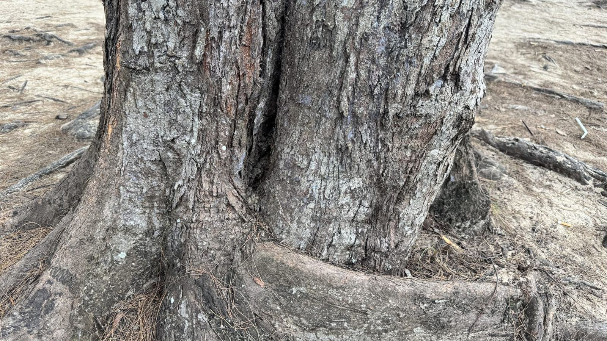

Uppdrag
Ett urval av fällningar, beskärningar och stubbfräsningar.
- 2026

Bok på gårdstomt
Andra behandlingen av en 160 år gammal bok med packad jord efter ett garagebygge.
- 2026

Askarna vid godset
Sextio askar bedömda – tolv sparade och arton fällda.
- 2025

Ek i villaträdgård
Honungsskivling påvisad, rotzonen luckrad och kronan lättad.
- 2025

Parkens bokar
Rotskydd och tillsyn för sex bokar när gångvägarna byggdes om.
- 2025

Almen vid prästgården
Trädet gick inte att rädda och virket kördes till förbränning för att stoppa spridningen.
- 2026

Villa i Karlshamn
Behandling av två ekar planerad till november.


Omdömen
Träd som fick en ny chans
Ingemar P. · Bräkne-Hoby”Boken tappade löven i juli varje år efter garagebygget. Två säsonger senare är kronan tät igen.”
Helena R. · Karlskrona”Utlåtandet förklarade exakt varför eken mådde dåligt. Ingen annan hade ens tittat på marken.”
Carl-Johan A., godsförvaltare · Johannishus”Vi trodde att alla askar på godset var förlorade. Tolv av dem står kvar och är friska.”